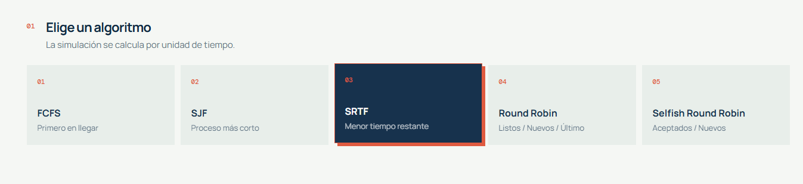
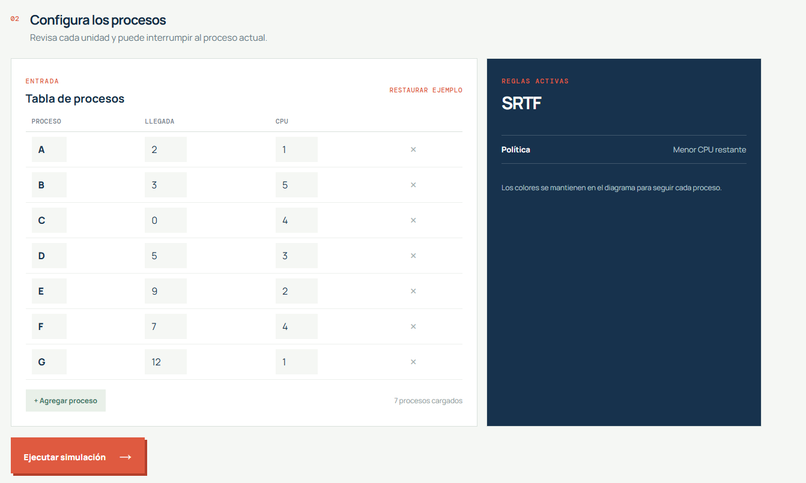
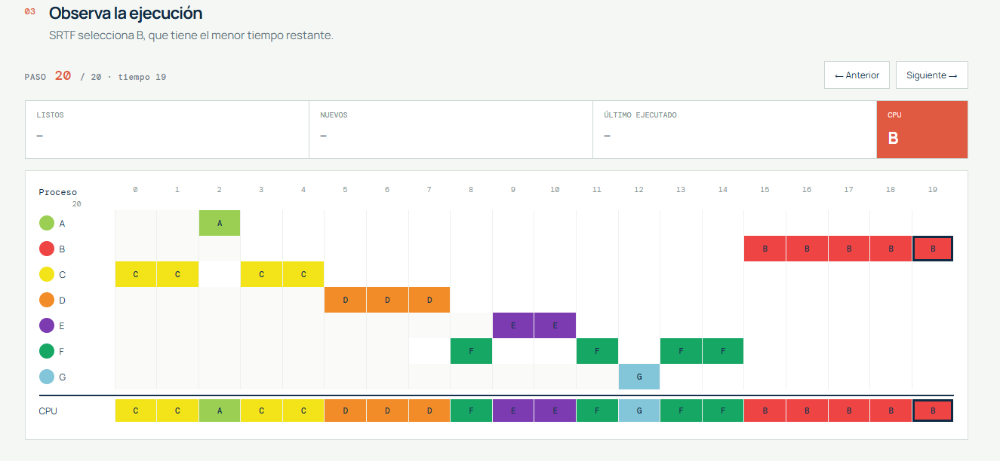
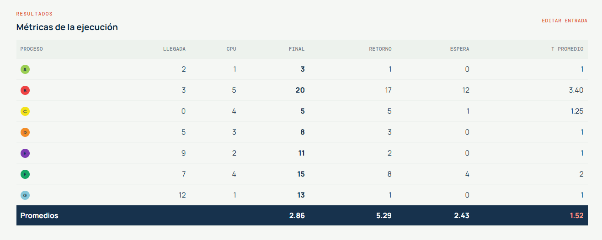

CPU Scheduler Lab
Simulador educativo de algoritmos de planificación de procesos desarrollado con Angular 21 y TypeScript.
1. Descripción
CPU Scheduler Lab permite ingresar procesos, seleccionar un algoritmo de planificación, observar su recorrido en la CPU y consultar las métricas finales. Toda la simulación se ejecuta localmente en el navegador.
Repositorio: github.com/Byronv97/proyectoSO
Cumplimiento de la consigna
| Requisito | Implementación |
|---|---|
| Lenguaje | Angular 21, TypeScript, HTML y CSS. |
| Menú de algoritmos | FCFS, SJF, SRTF, Round Robin y Selfish Round Robin. |
| Más de cinco procesos | Inicia con siete procesos A-G. |
| Administrar cantidad | Permite agregar y eliminar filas. |
| Tiempo de llegada | Entero entre 0 y 20. |
| CPU | Entero entre 1 y 20. |
| Quantum | Campo editable entre 1 y 20 para Round Robin. |
| Colores | Diagrama y fila CPU con color por proceso. |
| Promedios | Final, retorno, espera, T Promedio y promedios generales. |
| Ejecutable | Build web en dist/proyectoSO, ejecutable con el servidor local. |
| Código fuente | Carpeta src/ y documento docs/SCRIPT-FUENTE.md. |
Proyecto individual. Repositorio: github.com/Byronv97/proyectoSO.
Caso de entrada y resultado
El ejemplo inicia con A-G: A(2,1), B(3,5), C(0,4), D(5,3), E(9,2), F(7,4) y G(12,1).
Para SRTF, la secuencia de CPU de referencia es:
C C A C C D D D F E E F G F F B B B B B
| Proceso | T Final | T Retorno | T Espera | T Promedio |
|---|---|---|---|---|
| A | 3 | 1 | 0 | 1 |
| B | 20 | 17 | 12 | 3.40 |
| C | 5 | 5 | 1 | 1.25 |
| D | 8 | 3 | 0 | 1 |
| E | 11 | 2 | 0 | 1 |
| F | 15 | 8 | 4 | 2 |
| G | 13 | 1 | 0 | 1 |
| Promedios | - | 5.29 | 2.43 | 1.52 |
2. Algoritmos
FCFS
Ejecuta los procesos según su orden de llegada y no interrumpe el proceso actual.
SJF
Selecciona el proceso disponible con menor tiempo total de CPU. Es no expropiativo.
SRTF
Selecciona el menor tiempo de CPU restante y puede interrumpir el proceso actual.
Round Robin
Entrega turnos según un quantum configurable de 1 a 20. Los procesos que no terminan regresan al final de la cola.
Selfish Round Robin
Usa los grupos Aceptados y Nuevos. Los aceptados aumentan +1, los nuevos +2 y la variante utiliza quantum 1.
3. Flujo del sistema




4. Entrada y validaciones
- Identificador único por proceso.
- Tiempo de llegada entero entre 0 y 20.
- Tiempo de CPU entero entre 1 y 20.
- Quantum entero entre 1 y 20 para Round Robin.
5. Métricas
T Final = último instante de ejecución + 1 T Retorno = T Final - T Llegada T Espera = T Retorno - Tiempo CPU T Promedio = T Retorno / Tiempo CPU
La columna T Promedio representa técnicamente el retorno normalizado.
6. Recorrido paso a paso
Al ejecutar una simulación se muestra el diagrama completo. La primera pulsación de Siguiente activa el modo paso a paso y muestra el primer instante. Las siguientes pulsaciones agregan unidades de CPU. Anterior oculta la última unidad visible. La celda activa se marca con un borde oscuro.
7. Instalación y pruebas
npm install --legacy-peer-deps npm start npm run build npm test -- --watch=false
La aplicación se abre en http://localhost:4200/.
8. Código fuente
El motor se encuentra en src/app/scheduler.ts. La vista y el estado Angular están en src/app/app.ts, src/app/app.html y src/app/app.css. Las pruebas están en src/app/scheduler.spec.ts y src/app/app.spec.ts.
El documento completo del código se genera mediante npm run export:source y se guarda como docs/SCRIPT-FUENTE.md.